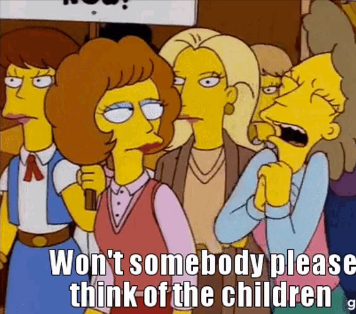

now | blog | wiki | recipes | bookmarks | contact | about | donate
* * * back home * * *
censorship under any guise is evil
2025-08-13
There have been some things going on in the UK and other parts of the world that are a huge cause of concern for people that care about the open Web, and I thought I'd do a little write-up about it. If you're online enough, you're probably hearing a good deal about some of what I'm going to refer to as "censorship bills", since that is what they are.
Here are the major ones that are huge causes for concern - there might be others as well that I'm not aware of yet, but make no mistake, they're all evil, and a threat to the internet we know and love:
These bills are not something to be taken lightly if you live in these countries. They use language such as "protecting children from inappropriate content", "combatting 'disinformation'", "stopping terrorism", and other such jargon, but these are all just thinly veiled wording for one simple concept: Online censorship.
Every time you see a law such as any of these attempting to get passed, or indeed, getting passed, don't think for one second the governments passing them care about what they pretend to care about. These are meant to censor what you can see, say, and do online. Requiring identification to access websites is a huge privacy risk, and you shouldn't be giving up your ID to any random companies. Trying to grab up people's private communcations and stop them from speaking their minds is a huge restriction on what we see as a fundamental right here in America, the freedom to speak freely without reprisal from the government.
Think I'm overhyping the situation? Look at the state of the UK right now, and I wish I were making this up. People are being sent to jail for tweeting wrong-think and for whatsapp conversations. Someone else was arrested for praying outside of an abortion clinic. There was a time when I would have loved to have visited the UK, but seeing it slide into the Orwellian nightmare it is now becoming, I think that time has passed.
The UK is not alone, either. The EU censorship dragon is rearing its head with the DSA and Chat Control, mentioned above. Trying to effectively destroy encrypted messaging services is a huge affront to people's privacy and the protection of their sensitive data. This stuff is surveillance, plain and simple. I can't think of another way to put it, because that term is the most apt way of describing what is happening. It's not just about the governments getting access to that data, either, because if they can, there is nothing stopping malicious actors from finding ways to do the same. The passage of such laws is bound to open Pandora's box, because if these kinds of "backdoors" exist, you can bet that others will find ways to walk through them.
I get it, when it comes to protecting kids, the idea is a fine one. We all want to keep children safe, happy, and healthy, and away from adult content. But this shouldn't come at the expense of restricting the speech and expression of adults. The people who should be responsible for the protection of their kids on the internet is their parents, and this is the reason why we have had robust parental controls built into most operating systems for quite awhile now. I am also, of course, in favor of finding and locking up people who would seek to abuse and exploit children, as any decent person should be. I don't, however, think the answer to that question should be mass surveillance of regular people.
But with that in mind, I don't believe any of these laws are to do with protecting kids online. Some of these bills explicitly mention concepts like "disinformation" and "harmful materials". These governments want to restrict expression online, and it is as simple as that.
The answer to this question very much depends on how internet companies choose to enact them on a national basis. Will some of these platforms begin age-gating content globally, or will it depend on what IP range you're coming from? While laws such as these have also tried to be pushed in the States, we have the freedom of speech and expression under the Constitution, and such laws domestically would very likely have a harder time getting passed. The Kids Online Safety Act is one such example, and it has found concerns raised by the House, the ACLU, and others. Lately, the US government has been actively condemning the censorship laws being bandied about in the UK and EU.
We have much stronger protections for freedom of speech and expression in the States, but we still must protect them. Keeping your eye out on any potential bills that could threaten such freedoms is important, and voicing your concerns to the appropriate representatives is a good way to make sure your opinion is heard.
These are some scary times in many places of the world for people who care about the open internet and all the freedom we have enjoyed on it for the last several decades. The open web is the one place where people can build whatever they'd like, speak with folks from all over the world, get information from any place they can imagine, find all the content they want, and so much more. If you live in any of these places where the open web is in danger, do whatever you can to help organize voices against these censorship efforts before it's too late to save the internet you know and love is just a shadow of itself!
In the meantime, I recommend beginning to look into decentralized web technologies that will allow you to continue to have some semblance of freedom online without giving up personal information about yourself. You can explore options such as the fediverse, nostr, online video platforms such as Odysee, and grab a good VPN like Mullvad, ProtonVPN, or Obscura. Tor is also there to help you route your internet traffic through decentralized nodes to get around censorship.
These are great tools that can help you in your quest to still be online without giving up your personal information to random websites while still being able to express yourself and give the middle finger to these types of draconian laws.